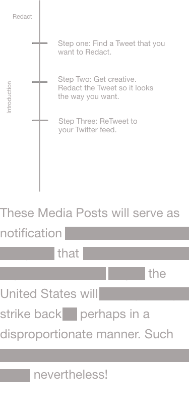
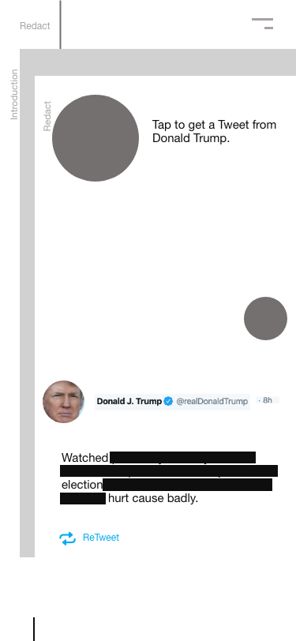

Redact - Case study and redesign
"Take political tweets back into your own hands"
Summary
1.0
Redact was created for a school e-Commerce project. The original deliverables for this project were to create a program that allowed users to ‘black out’ quotes that were randomly generated. These quotes were dynamically generated and then displayed on products that could then be selected and the user could go through a check out process to buy their selected item. This site also had a CMS where the client was able to see their orders, check them as completed, change the products up if they chose and store all of the images created by the users.
When I began looking at blacked out poetry it reminded me of redacted government documents, specifically in relation to indigenous treaties in Canada. I decided to have the quotes be tweets that in future iterations would be pulled from political parties feeds, but in the 1.0 were hand picked and put into an array that the user could cycle through. I really enjoyed this project, I learnt a lot about where my interests lay as a programmer and what I had difficulty processing.
When I began looking at blacked out poetry it reminded me of redacted government documents, specifically in relation to indigenous treaties in Canada. I decided to have the quotes be tweets that in future iterations would be pulled from political parties feeds, but in the 1.0 were hand picked and put into an array that the user could cycle through. I really enjoyed this project, I learnt a lot about where my interests lay as a programmer and what I had difficulty processing.
Methods: Agile, Illustrator, XD, PHP, AJAX, Javascript, JQuery, mySQL
Timeline: 2 months
Timeline: 2 months
2.0
Due to the tight timeline of Redact 1.0 my design was very minimal. The project itself focused on processing verbally instructed coding elements of the course and implementing them on a fully functional site. In the redesign I decided to make Redact 2.0 simple. Create a single page application that is disconnected from mySQL and uploads directly to Twitter.
Methods: XD, Protopie, Illustrator, Javascript, JQuery, AJAX, API
My role: Design, IA, IxD, UX / UI, Development
Redact 1.0 Gallery
This is the original design. This project was designed and created over 30 days and upon doing user testing I found that folks wanted to be able to have less choices for politicians to choose from.
Redact 2.0
Process
In the previous version of this site I did user research that consisted of surveys and interviews to find out if this product had a market and was viable. This would be the driving force for deciding a redesign.
Redact 2.0 began from scratch and was envisioned, at its end point, to be a mobile first website. That was connected via API or stored JSON data to dynamically show up to date tweets from Donald Trump and the Democratic nominees.
Redact 2.0 began from scratch and was envisioned, at its end point, to be a mobile first website. That was connected via API or stored JSON data to dynamically show up to date tweets from Donald Trump and the Democratic nominees.
Key points of this design are:
Intuitive onboarding
Ease of navigation
Allow users to learn and feel empowered about the political system by engaging it in a different way than they had previously
Ease of navigation
Allow users to learn and feel empowered about the political system by engaging it in a different way than they had previously
Image of a redacted government doc and image of the first screen of redact

low fidelity mockups of Redact


visual design
high fidelity mockups
Demo
Conclusion
something conclusion here
If you have made it this far thank you for reading!
Want to chat?
‚úçüèª charliestableford2@gmail.com
‚òùüèª